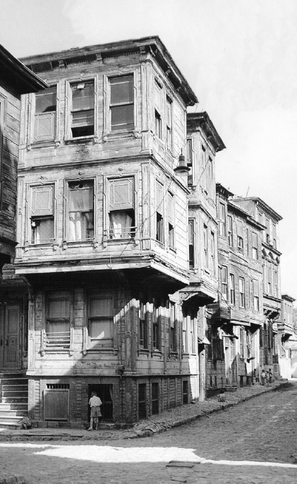

Kadınların biz erkekleri henüz adam sırasına koymayarak kaçmadıkları günlerde evlerimize gelenlerin aralarına; evlerine gittiklerimizin harem hayatına karışmak sayesinde saraylarda, konaklarda evlerde neler var, neler yok tabiatıyla görürdük. Hele akranlarımızı bulursak çocukluklarımızı da gösterirdik. Odalarda, sofalarda, bahçelerde koşar, oynardık. Bize mahsus hazırlanan kahvaltı sofralarında yerdik, içerdik. Bunlardan sonra büyüklerin yanlarına götürülürdük. Hünerlerimizi göstermek için şiirler okurduk, şarkılar söyledik, dans ederdik. Yüzlerimizi okşarlardı, arkalarımızı sıvazlarlardı, bize dua ederlerdi. Ellerini öper, odadan çıkardık.
Daha sonraları biraz daha yaşımız ilerledikçe bize “Gençler” derler, yanlarında oturmaklığımıza müsaade ederlerdi ve bizimle konuşarak bir sürü sual sorarlardı. Cevaplarımızda tereddüt göstersek veya yanlış söylersek tashihten kaçınmazlar, bizimle meşgul olurlardı.
Konakların Teşrifatı

19. yüzyıl sonu,
Süleymaniye’de bir sokak,
Kaynak: Doğan Kuban, Türk “Hayat”lı Ev.
Şunu da arz etmeliyim: Eski saraylarla konakların harem dairelerinde bir hayli teşrifat vardı. Kapıdan girer girmez istikbal edilerek derhal, bilmem nasıl arz edeyim, vestiyer odasına alınmak; orada çarşafları, feraceleri çıkarmak; büyük aynalara ve kalfaların tuttukları el aynalarına bakıp üstü başı, hotozları düzeltmek, saça başa düzen vermek gibi. Bundan sonradır ki, teşrifatçı kalfaların delaletiyle üst kata çıkılırdı; ev sahibelerinin kabul salonlarına girilirdi. Yine o zaman içinde briç partileri, çay davetleri gibi içtimalar malum ve makbul olmadığı için ve hatta kabul günleri henüz revaç bulmadığından öğleüstü ziyaretleri serbest ve günlük işten madûd idi. Arzu eden istediği yere gider, ziyaret eder, ikramla hüsnü kabul görür, tatlı tatlı konuşur, evine dönerdi. Bu da demekti ki, eski salonlar herkese açıktı. Ev sahibi bulunmasa bile evin yüzünü ağartacak kâhya kadınlar ve baş kalfalar gelene layık olduğu hürmeti gösterirler, icap eden hizmetleri arz ederlerdi.
Misafir Odaları
Saraylarla; köşklerle, konaklarda; yalılarda müteaddit salon ve misafir odası vardı ve ucu bucağı bulunmayan sofalar bu odaların ortalarına müsadifti. Buralarda mükemmel mefruşat; geniş divanlar, kanepeler, koltuklar, alaturka köşe minderleri; alafranga salon takımları; oturmalarına izin verilmiş olan emektar kadınlara mahsus yer minderleri, salonları doldururdu; çok da süslerdi. Hele oyalarla süslenmiş hotozlarını giyen kalfalar, halayıklar, redingotlu bir sürü haremağası mutlaka güler yüzleriyle ortalığa neşe verirlerdi ve bunlardan bir kısmı âdeta sultan efendilerin veya hanımefendilerin nedim-i hassı mevkiinde bulunurdu. Hakikaten terbiye ve espri ashabından oldukları için...
Hakikaten ne tuhaf usuller vardı eski zamanda...
1. Sırmalı örtülerle üzerleri örtülü gümüş tepsilerle gümüş cezvelerle kahve getirirlerdi, zarflı kahve fincanlarıyla misafirlere sunarlardı.
2. Bundan sonra kahve faslı vardı. Kuş sütünden başka eksiği olmayan kahvaltı tepsileri ayrıca çay ve sütlü kahve takımları; gümüş semaverler; bazı evlerde elmaslı çay ve kahve kaşıkları tarif olunamayacağı kadar güzeldi. Bir güzelliği de hanımefendilerin elleriyle kaynattıkları reçeller; emektar bacıları harem mutfağında hazırladıkları sakız veya sigara börekleri; nevi nevi tatlılar; muhakkaktı bu güzelliği bir kat daha arttırıyordu.
Kahvaltı
Misafirle ev sahibi kahvaltı masası etrafında yerken içerken güzel güzel ve tatlı tatlı söyleşirken bir şey daha yapılırdı. Evin kızları, genç beyleri veya gelinleri marifetlerini izhar ederlerdi. Piyano; keman veyahut ud ve kanun gibi sazlardan bildiklerini çalar ve teganni ederlerdi. Evin saz takımı varsa bunlar da fasıl yaparlardı. Aralıkta da efendilerin yahut kalfaların, kızların el işleri gösterilir ve teşvik mahiyetinde bir sürü takdirkâr sözler söylenirdi. Sarmalar, gergefler, kanaviçeler ve oymalar bu sayede birbirinden güzel olmak ve işlenmek yolunu tutmuş, çünkü rağbet ve takdir görürdü. Hele benim çocukluğumda büyük validemin kalfalarından Kâmran’ın boncuklu firkete oyaları, koca İstanbul’da fevkalade meşhur olmuştu.
Akşam, 15 Aralık 1947